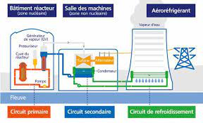

Dans un premier point je vais faire un bref résumé sur l'architecture nucléaire puis je vais vous présenter 5 points qui sont représentés par les 4 différents liens du top barre
mais il existe different installation nucléaire ou moteur(cuve a reacteur),turbine ect... mais de tous sa l'element le plus important et surtout pour moi le plus utile serainement les tuyau pour refoidir,conduire l'eau qui empéche les lieux détre comtaminer par la radiation car tout les 20cm (a peux pres) le niveau de radiation chut par deux c'est pour sa qu'il y a des plongeur dans la cuve du reacteur nucléaire.
Comme on pourait si attendre d'une central nucléaire cella sert a faire de l'énergie a un court relativement bas car meme si l'uranium 235 est rare (page 2 sur la composition)mais lors de sa fision produit boucoup d'energie mais le plus grand avantage aux nucléaire est sa rellative securité ainsi que la polution cassi null.
Mais si cette pollution n'est pas sous forme d'une couche dossome tout a un pris et selluit la est le déchet qui reste pandent des million d'année .
comment sa fonction? Se sera la plus grand question aux quelle je repondrait dans cette partis.
bon je vais me repeter mais Une centrale nucléaire produit du courant électrique à partir de la chaleur. C’est donc une centrale thermique, au même titre qu’une centrale à charbon ou à gaz. A cette différence près que la production de chaleur ne génère ni polluants ni gaz à effet de serre.
La fission des noyaux atomiques libère de l’énergie. Cette énergie chauffe de l’eau sous haute pression, qui se transforme en vapeur très chaude, sur le principe de la cocotte-minute. Cette vapeur entraîne une turbine reliée à un alternateur qui produit alors du courant. Ce courantest acheminé jusqu’au consommateur par le réseau de distribution.
Une centrale nucléaire se compose, pour l’essentiel, de deux parties. Dans la partie nucléaire, la fission nucléaire produit de la chaleur. Dans la partie conventionnelle, cette chaleur est transformée en courant électrique. La partie conventionnelle est très similaire à celle que l’on trouve dans les centrales à charbon, les centrales à gaz et les centrales géothermiques. Les tours de refroidissement que l’on voit de loin ne sont donc pas l’apanage des centrales nucléaires, elles sont également présentes dans les centrales à charbon et les centrales à gaz. La fumée qui sort de la tour de refroidissement est de la vapeur d'eau.

pour plus d'explication voir page suivant